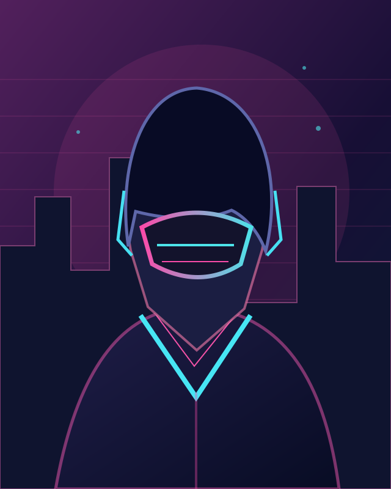
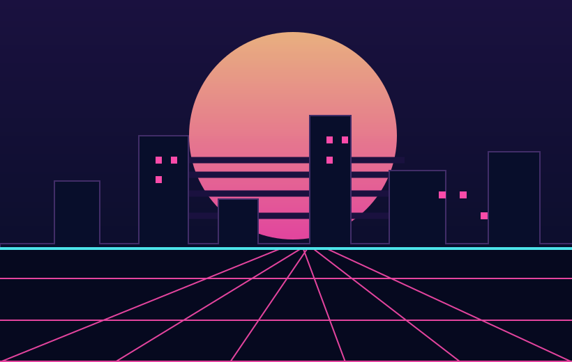
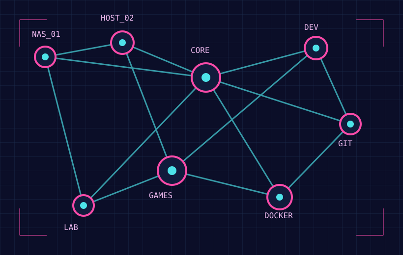

PORTFOLIO.EXE / VERSION 2.0
Welcome to the digital frontier_
BUILDING DIGITALWORLDS.
Building worlds, solving problems, and forging things that work.
FOCUS_01SOFTWARE
FOCUS_02GAME DEV
FOCUS_03SYSTEMS
[ 01 / THE PROJECT LOG ]
MISSION ARCHIVE_
Selected experiments, systems and things I've built. Choose a mission to open its dossier.
DATABASE CONNECTEDACCESS GRANTED
//
00 ENTRIESACTIVE MISSIONS
PROJECTS IN PROGRESS & FIELD NOTESNo active missions in this category. Check another channel.
PAGE 01 / 01
✓
00 ENTRIESCOMPLETED MISSIONS
DEPLOYED SYSTEMS & FINISHED PROJECTSNo completed projects listed yet.
PAGE 01 / 01
[ 02 / PERSONNEL FILE ]
BEHIND THE SCREEN_
PROFILE VERIFIED ●
CAM_01 / OPERATORREC ●

IDENTITY_01DEVELOPERBuilder / Explorer
ABOUT_ME.TXT◧
> WHO_AM_I
Curiosity is my
favorite weapon.
STATUS
AFFILIATION
EDUCATION
SPECIALIZATION
[ 03 / TECH STACK ]
SYSTEM LOADOUT_
The languages, platforms and tools in my arsenal. Open a module to inspect the full stack.
MODULES LOADED 00
[ 04 / DIGITAL TERRITORY ]
WORLD MAP_
A little window into the worlds and systems that power my curiosity.
GRID_A / OPERATIONS HUB 01

GRID_B / NETWORK TOPOLOGY 02

[ TRANSMISSION CHANNEL / OPEN ]LET'S BUILD
[ 05 / GET IN TOUCH ]
LET'S BUILD
SOMETHING NEW.
END TRANSMISSION_THANK YOU FOR VISITING